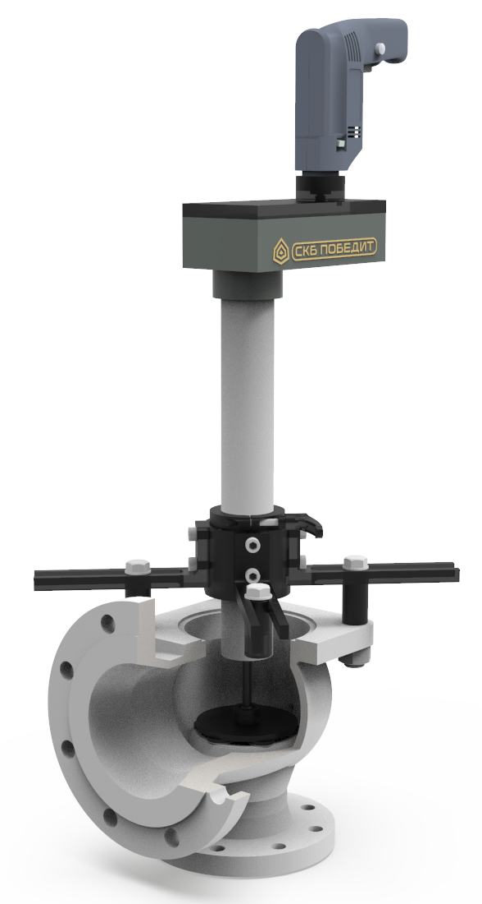

ПОБЕДИТ-СПМ-2-К
Шлифование уплотнительных поверхностей корпусов и золотников запорных и предохранительных клапанов без удаления их из трубопровода.
Шлифование уплотнительных поверхностей корпусов и золотников запорных и предохранительных клапанов без удаления их из трубопровода.
| Параметры | ПОБЕДИТ-СПМ-2-К |
|---|---|
| Условный проход обрабатываемых клапанов запорных DN, мм | 8…150 |
| Максимальная глубина погружения устройства, мм | 260 |
| Частота вращения, регулируемая, мин -1 | 250-850 |
| Мощность электропривода, Вт | 600 |
| Мощность пневмодвигателя, Вт | 350 |
| Частота вращения притира, об/мин | Регулируемая |
| Габаритные размеры, мм | 650х700х200 |
| Масса, кг | 60 |
Пневмопривод и/или электропривод*;
Набор сменных обрабатывающих дисков для шлифования и притирки;
Комплект самоклеящихся шлифовальных колец;
Комплект ЗИП;
Оборудование позволяет восстановить работоспособность (герметичность) трубопроводной арматуры без удаления её из трубопровода.
Мобильность установки позволяет производить ремонт арматуры, как в условиях ремонтных мастерских, так и в «полевых» условиях – на месте установки арматуры в трубопроводе.